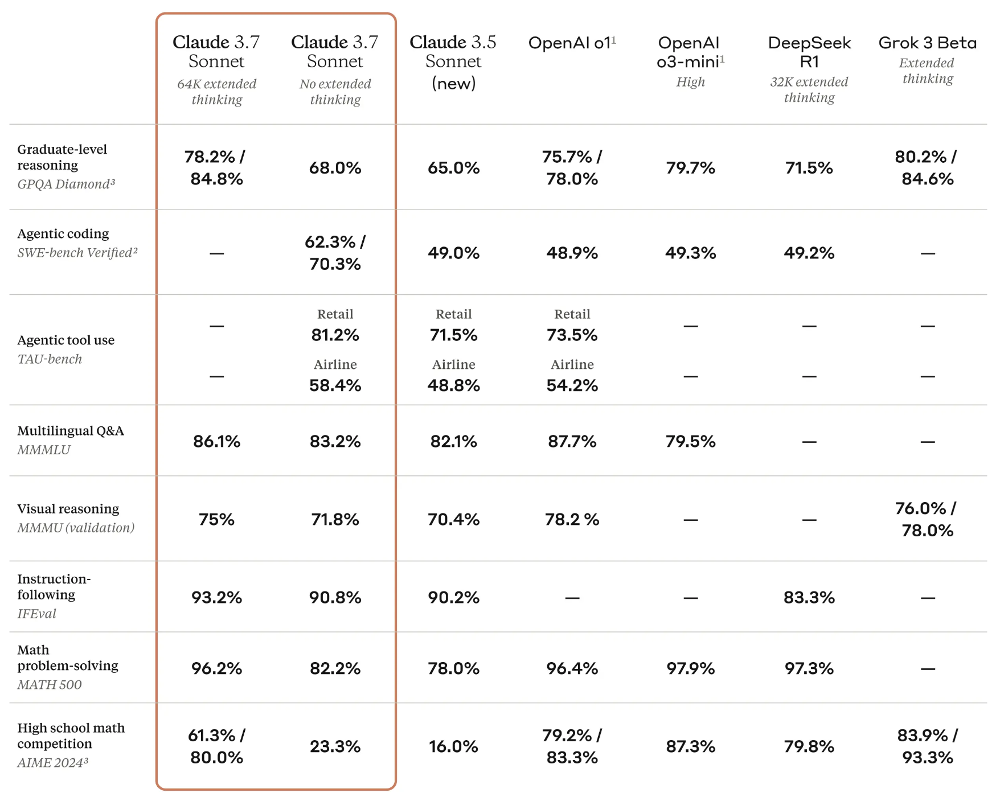

Claude 3.7 Sonnet
This past week Anthropic announced Claude 3.7 Sonnet. Anthropic largely leads the LLM world for generating code that seemlessly fits into software. In it’s release Anthropic touted Claude 3.7 to be made with a different Philosophy - with an extended thinking mode that can be enabled to fit a given task. The release stated, “In extended thinking mode, it self-reflects before answering, which improves its performance on math, physics, instruction-following, coding, and many other tasks.” One of the interesting features that Claude came up with for this iteration is that users of their API can assign a budget to a given task - a differentiator with the space as many users complain of LLMs chewing through their credit.
Benchmark Performance
Below we can see the performance of the 3.7 modes on different benchmarks. I think it is important to note the difference on AIME - the highschool math competition. The extended thinking performed quite better, than the non-extended thinking version. This is important because this exam is indicative of the types of problems that Computer Scientists must generally solve and informs the models performance with more complicated algorithms.

Comparison
To illustrate the difference between these two types that Anthropic just released - I am going to pose the same prompt to the different versions and record the responses.
The prompt is going to be “Code the general logic for the game 2048”.
Claude 3.7 Sonnet Extended Thinking
I will note that Claude “thought” for about 10 seconds before generation this response and code:
I’ll create the core logic for the 2048 game in JavaScript. This implementation will include the game board, movement mechanics, tile merging, and win/lose conditions.
This implementation provides all the core game logic for 2048. Here’s an overview of how it works:
- The game is played on a 4×4 grid
- Initially, two tiles (either 2 or 4) are randomly placed on the grid
- Each move slides all tiles in one direction (up, down, left, or right)
- Tiles with the same values merge when they collide during a move
- After each successful move, a new tile (2 or 4) appears on a random empty cell
- The game is won when a tile with the value 2048 is created
- The game is lost when the grid is full and no more moves are possible
The code handles: - Moving and merging tiles in all four directions - Tracking the game score (incremented when tiles merge) - Detecting win condition (2048 tile created) - Detecting loss condition (no valid moves possible) - Managing the game state
To use this code, you’d need to create a user interface that displays the grid and handles user input. The commented section at the bottom shows an example of how to handle keyboard input.
Would you like me to explain any specific part of the implementation in more detail?
Here is the implementation class Game2048 { constructor() { // Initialize 4x4 game board this.grid = Array(4).fill().map(() => Array(4).fill(0)); this.score = 0; this.won = false; this.lost = false;
// Start the game with two random tiles
this.addRandomTile();
this.addRandomTile();}
// Reset the game reset() { this.grid = Array(4).fill().map(() => Array(4).fill(0)); this.score = 0; this.won = false; this.lost = false; this.addRandomTile(); this.addRandomTile(); }
// Get all empty cells getEmptyCells() { const emptyCells = []; for (let r = 0; r < 4; r++) { for (let c = 0; c < 4; c++) { if (this.grid[r][c] === 0) { emptyCells.push({ r, c }); } } } return emptyCells; }
// Add a random tile (2 or 4) to an empty cell addRandomTile() { const emptyCells = this.getEmptyCells();
if (emptyCells.length > 0) {
const { r, c } = emptyCells[Math.floor(Math.random() * emptyCells.length)];
// 90% chance of 2, 10% chance of 4
this.grid[r][c] = Math.random() < 0.9 ? 2 : 4;
}}
// Check if the game is over isGameOver() { // Check if board is full if (this.getEmptyCells().length > 0) { return false; }
// Check if any moves are possible
for (let r = 0; r < 4; r++) {
for (let c = 0; c < 3; c++) {
if (this.grid[r][c] === this.grid[r][c + 1]) {
return false;
}
}
}
for (let c = 0; c < 4; c++) {
for (let r = 0; r < 3; r++) {
if (this.grid[r][c] === this.grid[r + 1][c]) {
return false;
}
}
}
return true;}
// Check if player has won checkWin() { for (let r = 0; r < 4; r++) { for (let c = 0; c < 4; c++) { if (this.grid[r][c] === 2048) { this.won = true; return true; } } } return false; }
// Move tiles to the left and merge if possible moveLeft() { let moved = false;
for (let r = 0; r < 4; r++) {
// 1. Remove all zeros
let row = this.grid[r].filter(val => val !== 0);
// 2. Merge adjacent matching values
for (let c = 0; c < row.length - 1; c++) {
if (row[c] === row[c + 1]) {
row[c] *= 2;
this.score += row[c];
row.splice(c + 1, 1);
moved = true;
}
}
// 3. Fill the rest with zeros
while (row.length < 4) {
row.push(0);
}
// 4. Check if anything moved
for (let c = 0; c < 4; c++) {
if (this.grid[r][c] !== row[c]) {
moved = true;
}
}
// 5. Update the grid
this.grid[r] = row;
}
return moved;}
// Move tiles to the right and merge if possible moveRight() { let moved = false;
for (let r = 0; r < 4; r++) {
// 1. Remove all zeros
let row = this.grid[r].filter(val => val !== 0);
// 2. Merge adjacent matching values from right to left
for (let c = row.length - 1; c > 0; c--) {
if (row[c] === row[c - 1]) {
row[c] *= 2;
this.score += row[c];
row.splice(c - 1, 1);
row.unshift(0);
moved = true;
}
}
// 3. Fill the rest with zeros
while (row.length < 4) {
row.unshift(0);
}
// 4. Check if anything moved
for (let c = 0; c < 4; c++) {
if (this.grid[r][c] !== row[c]) {
moved = true;
}
}
// 5. Update the grid
this.grid[r] = row;
}
return moved;}
// Move tiles up and merge if possible moveUp() { let moved = false;
for (let c = 0; c < 4; c++) {
// 1. Create a column and remove zeros
let col = [];
for (let r = 0; r < 4; r++) {
if (this.grid[r][c] !== 0) {
col.push(this.grid[r][c]);
}
}
// 2. Merge adjacent matching values
for (let r = 0; r < col.length - 1; r++) {
if (col[r] === col[r + 1]) {
col[r] *= 2;
this.score += col[r];
col.splice(r + 1, 1);
moved = true;
}
}
// 3. Fill the rest with zeros
while (col.length < 4) {
col.push(0);
}
// 4. Update the grid and check if moved
for (let r = 0; r < 4; r++) {
if (this.grid[r][c] !== col[r]) {
moved = true;
}
this.grid[r][c] = col[r];
}
}
return moved;}
// Move tiles down and merge if possible moveDown() { let moved = false;
for (let c = 0; c < 4; c++) {
// 1. Create a column and remove zeros
let col = [];
for (let r = 0; r < 4; r++) {
if (this.grid[r][c] !== 0) {
col.push(this.grid[r][c]);
}
}
// 2. Merge adjacent matching values from bottom to top
for (let r = col.length - 1; r > 0; r--) {
if (col[r] === col[r - 1]) {
col[r] *= 2;
this.score += col[r];
col.splice(r - 1, 1);
col.unshift(0);
moved = true;
}
}
// 3. Fill the rest with zeros
while (col.length < 4) {
col.unshift(0);
}
// 4. Update the grid and check if moved
for (let r = 0; r < 4; r++) {
if (this.grid[r][c] !== col[r]) {
moved = true;
}
this.grid[r][c] = col[r];
}
}
return moved;}
// Make a move in the specified direction move(direction) { if (this.won || this.lost) { return false; }
let moved = false;
switch (direction) {
case 'left':
moved = this.moveLeft();
break;
case 'right':
moved = this.moveRight();
break;
case 'up':
moved = this.moveUp();
break;
case 'down':
moved = this.moveDown();
break;
}
if (moved) {
this.addRandomTile();
this.checkWin();
if (this.isGameOver()) {
this.lost = true;
}
}
return moved;}
// Get the current game state getState() { return { grid: this.grid, score: this.score, won: this.won, lost: this.lost, emptyCells: this.getEmptyCells().length }; } }
// Example usage: // // const game = new Game2048(); // // // Handle keyboard input // document.addEventListener(‘keydown’, (event) => { // switch(event.key) { // case ‘ArrowLeft’: // game.move(‘left’); // break; // case ‘ArrowRight’: // game.move(‘right’); // break; // case ‘ArrowUp’: // game.move(‘up’); // break; // case ‘ArrowDown’: // game.move(‘down’); // break; // } //
// // Update UI based on game.getState() // });
Claude 3.7 Sonnet Non-Extended Thinking
I’ll create the core logic for the 2048 game. Let me implement that for you:
This JavaScript implementation provides the complete logic for the 2048 game. The key aspects of the implementation include:
- Board Management:
- 4x4 grid represented as a 2D array
- Initialization with two random tiles (90% chance of 2, 10% chance of 4)
- Game Mechanics:
- Movement in four directions (up, right, down, left)
- Merging identical tiles during movement
- Score tracking when tiles merge
- Win detection when a 2048 tile is created
- Loss detection when no moves are possible
- Game Flow:
- After each valid move, a new random tile appears
- The game ends when either 2048 is reached (win) or no more moves are possible (loss)
To use this code, you would create a new game instance and call the move method with the direction (“up”, “right”, “down”, or “left”). The getState method returns the current state of the game including the grid, score, and game status.
Would you like me to explain any specific part of the implementation in more detail?
Below is the code implementation
class Game2048 { constructor(size = 4) { this.size = size; this.grid = Array(size).fill().map(() => Array(size).fill(0)); this.score = 0; this.won = false; this.lost = false;
// Initialize with two random tiles
this.addRandomTile();
this.addRandomTile();}
// Add a new random tile (2 or 4) to an empty cell addRandomTile() { if (this.isGridFull()) return false;
let emptyCells = [];
// Find all empty cells
for (let row = 0; row < this.size; row++) {
for (let col = 0; col < this.size; col++) {
if (this.grid[row][col] === 0) {
emptyCells.push({ row, col });
}
}
}
// If there are empty cells, add a new tile
if (emptyCells.length > 0) {
const { row, col } = emptyCells[Math.floor(Math.random() * emptyCells.length)];
// 90% chance of 2, 10% chance of 4
this.grid[row][col] = Math.random() < 0.9 ? 2 : 4;
return true;
}
return false;}
// Check if the grid is completely filled isGridFull() { for (let row = 0; row < this.size; row++) { for (let col = 0; col < this.size; col++) { if (this.grid[row][col] === 0) { return false; } } } return true; }
// Check if any moves are possible canMove() { // Check for empty cells if (!this.isGridFull()) return true;
// Check for possible merges horizontally and vertically
for (let row = 0; row < this.size; row++) {
for (let col = 0; col < this.size; col++) {
const value = this.grid[row][col];
// Check right
if (col < this.size - 1 && value === this.grid[row][col + 1]) {
return true;
}
// Check down
if (row < this.size - 1 && value === this.grid[row + 1][col]) {
return true;
}
}
}
return false;}
// Move tiles in a specific direction and merge where possible move(direction) { if (this.won || this.lost) return false;
let moved = false;
let prevGrid = JSON.parse(JSON.stringify(this.grid));
switch(direction) {
case 'up':
moved = this.moveUp();
break;
case 'right':
moved = this.moveRight();
break;
case 'down':
moved = this.moveDown();
break;
case 'left':
moved = this.moveLeft();
break;
default:
return false;
}
// If the grid changed, add a new random tile
if (moved) {
this.addRandomTile();
// Check if the player won (reached 2048)
this.checkWin();
// Check if the player lost (no moves available)
if (!this.canMove()) {
this.lost = true;
}
return true;
}
return false;}
// Helper function to rotate the grid for easier move implementation rotateGrid(times = 1) { let newGrid = JSON.parse(JSON.stringify(this.grid));
for (let t = 0; t < times; t++) {
const rotated = Array(this.size).fill().map(() => Array(this.size).fill(0));
for (let row = 0; row < this.size; row++) {
for (let col = 0; col < this.size; col++) {
rotated[col][this.size - 1 - row] = newGrid[row][col];
}
}
newGrid = rotated;
}
return newGrid;}
// Move tiles left and merge where possible moveLeft() { let moved = false;
for (let row = 0; row < this.size; row++) {
// Get non-zero tiles in this row
let tiles = this.grid[row].filter(val => val !== 0);
// Merge adjacent equal tiles
for (let i = 0; i < tiles.length - 1; i++) {
if (tiles[i] === tiles[i + 1]) {
tiles[i] *= 2;
tiles[i + 1] = 0;
this.score += tiles[i];
moved = true;
i++; // Skip the merged tile
}
}
// Remove zeros (merged tiles)
tiles = tiles.filter(val => val !== 0);
// Fill in remaining cells with zeros
while (tiles.length < this.size) {
tiles.push(0);
}
// Check if the row changed
if (!this.grid[row].every((val, idx) => val === tiles[idx])) {
moved = true;
}
// Update the row
this.grid[row] = tiles;
}
return moved;}
// Move tiles right by reversing, moving left, and reversing back moveRight() { for (let row = 0; row < this.size; row++) { this.grid[row].reverse(); }
const moved = this.moveLeft();
for (let row = 0; row < this.size; row++) {
this.grid[row].reverse();
}
return moved;}
// Move tiles up by transposing, moving left, and transposing back moveUp() { // Transpose this.grid = this.rotateGrid(3);
const moved = this.moveLeft();
// Transpose back
this.grid = this.rotateGrid();
return moved;}
// Move tiles down by transposing, moving right, and transposing back moveDown() { // Transpose this.grid = this.rotateGrid(3);
const moved = this.moveRight();
// Transpose back
this.grid = this.rotateGrid();
return moved;}
// Check if the player has won (reached 2048) checkWin() { for (let row = 0; row < this.size; row++) { for (let col = 0; col < this.size; col++) { if (this.grid[row][col] === 2048) { this.won = true; return true; } } } return false; }
// Get the current state of the game getState() { return { grid: this.grid, score: this.score, won: this.won, lost: this.lost, canMove: this.canMove() }; }
// Reset the game reset() { this.grid = Array(this.size).fill().map(() => Array(this.size).fill(0)); this.score = 0; this.won = false; this.lost = false;
// Initialize with two random tiles
this.addRandomTile();
this.addRandomTile();} }
// Example usage: // const game = new Game2048(); // game.move(‘left’); // game.move(‘right’); // game.move(‘up’); // game.move(‘down’); // console.log(game.getState());
Conclusion:
While on the surface the two outputs look very similar we can see that the code in the extended version is better commented and goes into greater detail. Perhaps this was not the best test case to see the differences in the models - it will be interesting to see how this gap grows and what types of models are used for everyday tasks.